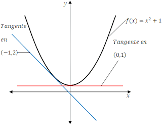

Reglas basicas de la integracion
Derivada de una funcion

Se define como la razón de cambio de la variable dependiente respecto a la variable independiente. Las derivadas de las diferentes funciones básicas son: la derivada de una constante,la derivada de una función idéntica,la derivada de una suma y diferencia de dos funciones,la derivada del producto de dos funciones,la derivada del cociente de dos funciones y la derivada de una potencia
Derivada de una constante
La derivada de una constante se define como igual a cero"Y = k"

Derivada de una función identica
La derivada de una funcion identica se define como igual a uno.y=x

Derivada de la suma y diferencia de dos funciones
se define como la derivada de la suma y la diferencia de la dos funciones.
Derivada del producto de dos funciones
Es igual a la primera función multiplicada por la derivada de la segunda función más la segunda función multiplicada por la derivada de la primera función.
Derivada del cociente de dos funciones
Es igual a el denominador multiplicado por la derivada del numerador menos el numerador multiplicado por la derivada del denominador, todo esto dividido entre el denominador elevado al cuadrado.
Derivada de una potencia
Es igual al numero que corresponde al exponente multiplicado por la función elevada al exponente disminuido en uno
Una de las muchas aplicaciones de las derivadas es que la derivada geometricamente representa la pendientes de una función
Definición de recta tangente con pendiente "m"
Si f está definida en un intervalo abierto que contiene a c y además existe el límite
entonces ,la recta que pasa por (c,f(c)) y cuenta con la pendiente m es la recta tangente de f en el punto (c,f(c)).
Ejemplo:
Calcular las pendientes de las rectas tangente a la gráfica de:
f(x) = x2 + 1 en los puntos (0,1) y (-1,2) y representarlos en una gráfica.
Solución:
Utilizando las reglas básicas de derivación tenemos que
f′(x)=d[x2]dx+d[1]dx=2xf′(x)=d[x2]dx+d[1]dx=2x
f′(x)=2xf′(x)=2x
f′(0)=2(0)=0f′(0)=2(0)=0
f′(−1)=2(−1)=−2f′(−1)=2(−1)=−2
